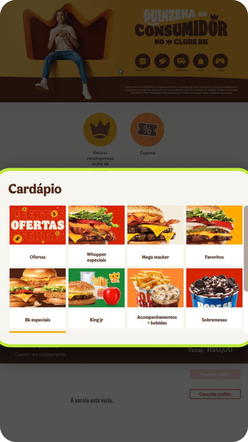
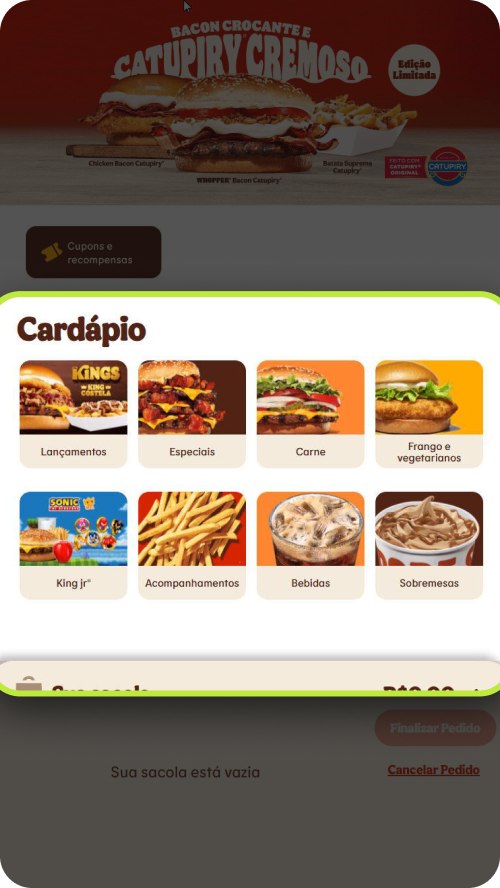

01 · Novas categorias
Cardápio no modelo mental do cliente
Quick win do workshop: renomear e reagrupar as categorias em lanche, acompanhamento, bebida e sobremesa, sem desenvolvimento.
−10s
no tempo de atendimento por cliente

